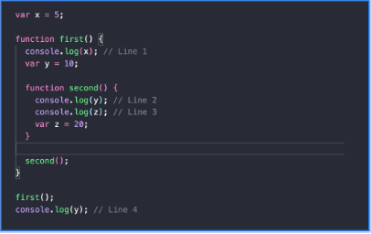
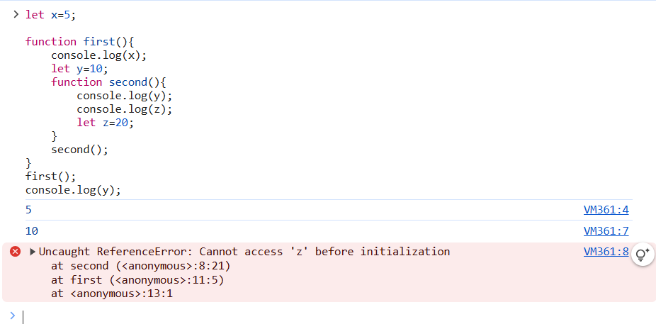

Calculator
Insert Values:
Temperature Converter
Insert Temperature:
Predicting the output

Q:Predict the output of the given snippet.
A:5 10 undefined Reference_ErrorQ:Explain how hoisting affects the execution of console.log(z) in second().
A:Only Declaration can be hoisted,Assignment can not be hoistedQ:Explain the scope chain for console.log(y) in second().
First y will be checked in local scope (where it has been called or accessed) and it's not found in function named second and then it will be checked in outer scope and now it will be checked in function named first so variable is detected with name y and value is printed; if function first does not hold the var y , then it will checked globallyQ:What happens when console.log(y) is executed outside first() (Line 4)? Why?
It will give reference error as var can be either function scoped or global scoped In this case var y=10 is initialized in function first so it will have it's scope to that function only. It can not be accessed outside the function first;Q:Modify the code to use let instead of var and observe any differences.
